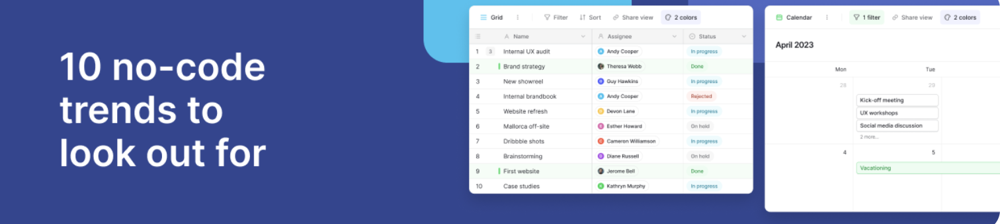
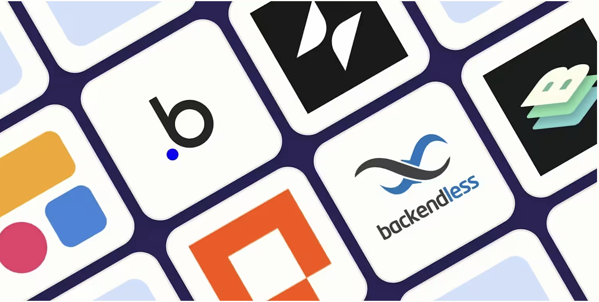

Veille Technologique : Le No-Code
J'ai choisi le No-Code comme thème de veille car il a été ma première introduction à la création de pages web. Cette veille de deux ans m'a permis d'explorer les outils et tendances du No-Code, tout en suivant l'intégration des solutions d'IA dans ce domaine en pleine évolution.
Outils de veille utilisé :

Juin 2024 - Qu'est-ce que le No Code ?
Concepts de base
Introduction
Applications
Guide débutant
Lire l'article complet
Février 2024 - Comment l'IA générative et le développement No-Code impactent les innovateurs
IA générative
Innovation
Synergie IA-NoCode
Développement rapide
Lire l'article complet

Janvier 2024 - Les 10 principales tendances No-Code et Low-Code à surveiller
Tendances 2024
Entreprises
Sécurité
Gouvernance
Lire l'article complet
Mars 2024 - Pienso développe des outils sans code pour entraîner des modèles d'IA
IA No-Code
Entraînement IA
Experts métier
Démocratisation IA
Lire l'article complet
Mai 2024 - No-Code/Low-Code et IA générative vont de pair
IA générative
Synergie
Solutions complexes
Automatisation
Lire l'article complet
Août 2024 - Comment utiliser les applications web No-Code pour libérer la puissance des données
Données
Apps web
Authentification
Gestion données
Lire l'article complet
Septembre 2024 - Comment l'IA affectera le développement Low-Code/No-Code
Impact IA
Efficacité
Réduction coûts
Productivité
Lire l'article complet
Décembre 2024 - L'impact des architectures Low-Code/No-Code sur la transformation numérique
Transformation digitale
Interface visuelle
Modèles préconçus
Accessibilité
Lire l'article complet
Janvier 2025 - Les 10 principales prédictions pour l'adoption du No-Code/Low-Code par les entreprises en 2025
Prédictions 2025
Adoption entreprise
Développeurs citoyens
Tendances futures
Lire l'article complet

Mars 2025 - Les 8 meilleures plateformes de création d'applications No-Code pour 2025
Résumé : Évaluation des principales plateformes No-Code disponibles en 2025, offrant des solutions pour créer des applications sans compétences en programmation.
Lire l'article complet